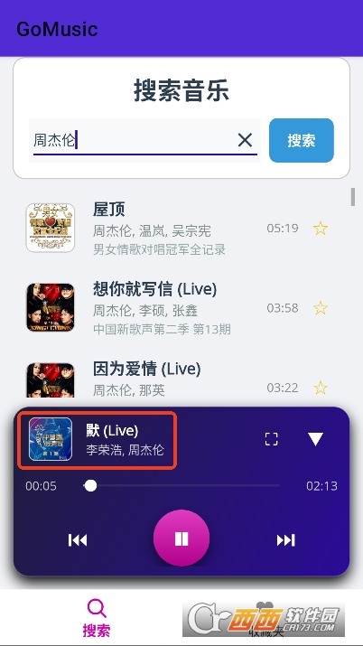

公司不让装播放器？GoMusic 嵌进我一天的多设备听歌工作流
内网限制不让装网易云QQ音乐，手机上还有一堆下载过的本地歌，收藏夹跨设备不同步——这套组合拳以前要折腾半小时，现在一条链解决。
以前怎么听歌：三台设备三套方案，每天花半小时兜圈子
说出来不怕笑话，我同时面对三种听歌场景，以前每一种都得单独处理：
公司电脑：内网限制严，安装包不让跑，网页版音乐站要么广告轰炸要么版权不全。试过各种"绿色版"，每次刷新浏览器 Cookie 过期又得重新登录，一天断两三次。
上下班通勤：手机上存了一堆以前下载的 MP3 和 FLAC，但是手机自带播放器实在难用——搜索烂、收藏夹不能导出、换手机时歌单跟着丢。又不想装网易云/QQ 音乐把流量耗在缓存上。
在家：偶尔想把收藏的歌导到笔记本当背景音乐，结果手机里的歌单是旧播放器的格式，要导出来还得装个转换工具，折腾一圈放弃了。
三条场景每天都要重复处理：早上在公司想搜一首歌听——翻 Cookie、登网页、等加载；中午通勤手机上翻收藏夹——找歌花三分钟；晚上想导歌单——放弃，直接用播放器随机放。
新流程：GoMusic 嵌进浏览器，三个场景通吃
朋友甩了 GoMusic 的官网链接，说就是个网页版播放器但聚合源全。我抱着试试看的心态开了浏览器标签页，结果第一天就把以前每天半小时的"听歌兜圈子"变成了三个步骤。
GoMusic 的核心就两个：网页直接用（公司电脑上浏览器开标签页就行，完全绕开内网安装限制）和能扫本地音乐（手机端也能下 APK 扫 SD 卡里的 FLAC）。把这俩能力嵌进我的日常节奏，就成了这条链：
早上到公司：Chrome 开 GoMusic 标签页，书签栏一点就到。不需要登录、不需要缓存、不需要装任何东西。搜一首今天想循环的歌，播放列表里挂一上午。搜歌这块我特意注意过——GoMusic 聚合了多个源，搜不到原版还能搜到翻唱、Live 版、纯音乐版，比单家音乐站覆盖广。

中午通勤：手机端从GoMusic下载的 APK，开机自动扫了一遍 SD 卡里的音乐文件——MP3、FLAC、AAC、OGG 全识别出来了，本地音乐直接放进同一个收藏夹。通勤路上打开就能续上早上没听完的，或者切去搜新歌。以前手机自带播放器搜本地歌要进三级菜单，现在直接一个搜索框，关键词输进去就出结果。
晚上在家：笔记本同样浏览器开 GoMusic 网页版。之前头疼的"导歌单"问题没了——手机端收藏的歌，我在 GoMusic 里手动加进网页版的同一个收藏夹（两个端共享同一个账号的话甚至不用手动加），或者直接用 GoMusic 的本地扫描把笔记本里的备份文件也挂进来。
这条链的关键衔接点只有一个：收藏夹统一管理。三个端各自往同一个收藏夹里加歌，不管是在线搜的还是本地扫的，都在同一个列表里找得到。以前的三套收藏夹（公司网页、手机本地、家用播放器）现在合并成一套。
流程里最容易断的两个环节：搜不到歌和睡前忘关
任何工作流都有容易掉链子的地方。我这条 GoMusic 链跑了三周，两个问题反复出现，摸出了处理办法。
第一个环节：搜不到想听的歌。一开始以为是 GoMusic 本身收录不全，后来发现八成是搜索关键词的问题。我后来去GoMusic文档里翻到一套排查清单，按那五步走：
- 先换关键词写法——只输歌名搜不到就加歌手名；英文名搜不到换中文名；带标点的去掉标点重搜
- 检查错别字——"起风了"写成"起风的"这种低级错误真的高频
- 用热门歌测网络——搜"周杰伦 稻香"，能播说明软件没问题，问题就在目标歌曲本身
- 同一首歌搜不同版本——搜不到原版试试加"翻唱""纯音乐""Live"后缀
- 最后才是清缓存——系统设置里找到 GoMusic 清应用缓存，别清数据（会丢收藏）
五步排查完，90% 的搜不到问题都能解决。真找不到的那 10%，换一首就是了——GoMusic 聚合了多个源，但冷门翻唱、Demo 版、小语种独立发行本来就不可能全覆盖。
第二个环节：睡前听歌忘关。以前用手机自带播放器睡前开着，第二天起来手机电量烧光，有次还发烫重启。GoMusic 的睡眠定时设置在播放页右上角，预设 15/30/60 分钟三个选项，我设 30 分钟——基本够我听完一首歌入睡，到点自动暂停。不想等了可以在定时运行时直接进设置取消，或者追加 15 分钟。这个功能看起来小，但它是整个"睡前听歌"子流程的防呆闸口，没这个闸口手机会被我烧坏。
效果和边界：省了半小时，但有两件事别指望它
跑了一个月这条链，老实算账：以前每天花在"找歌+切设备+导歌单"上的时间大概 25~35 分钟，现在压缩到 5 分钟以内——本质上就是少了两次手动登录和一次歌单导入，加上搜不到歌时的 5 步排查代替了以前的"算了随便听"。这是可数的效果，不是什么"大幅提升效率"的空话。
但这条链也有边界，两件事别指望 GoMusic 帮你解决：
第一，它不帮你找版权下架的歌。聚合源再广，人家版权方把歌下架了，你搜任何关键词也找不到。GoMusic 能做的是帮你找到翻唱、Live 版、纯音乐版的替代品——但就是找不到原版。这时候要么接受替代品，要么自己找别的渠道下了导入本地音乐。
第二，均衡器不是万能的。GoMusic 内置均衡器开关，可以调低频/中频/高频增益——耳机偏冷就开了调中频，低音重就调低低频，听古典爵士就关了还原。但均衡器调的是软件层面的频段，手机本身硬件音效好的话（部分品牌有独立音效芯片），GoMusic 均衡器开了反而可能盖过硬件的表现。这个功能得自己试，别机械照搬别人的参数。
总的来说，GoMusic 适合我这种"三台设备三套限制、但核心需求就是听歌不折腾"的人。如果你只有一台电脑、只用一个音乐 App，那这套工作流对你来说就是多此一举——省不了什么时间。但只要你同时面对"公司不让装 + 手机有本地歌 + 家里有另一台设备"这三个场景，GoMusic 嵌进浏览器就能把三套方案合成一套。
说了这么多，想试试的话直接去装就好。这套软件的文档在三个仓库里都能拿到：GitHub、Gitee 和 GitCode 上都有完整的说明，不管你习惯哪个平台都能找到。